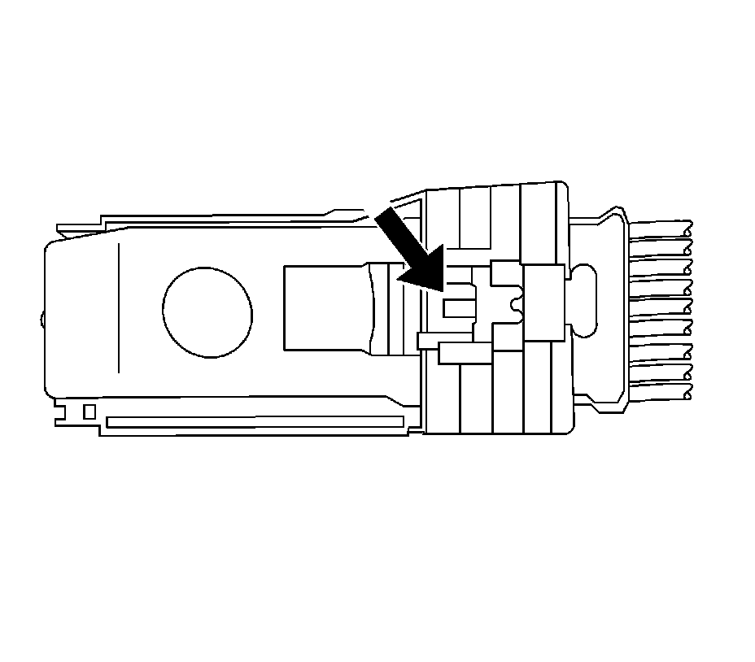
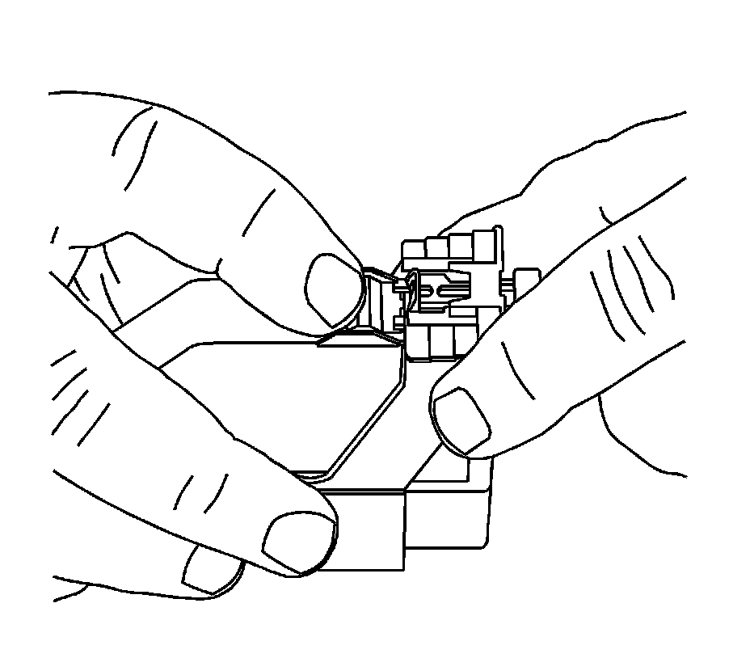
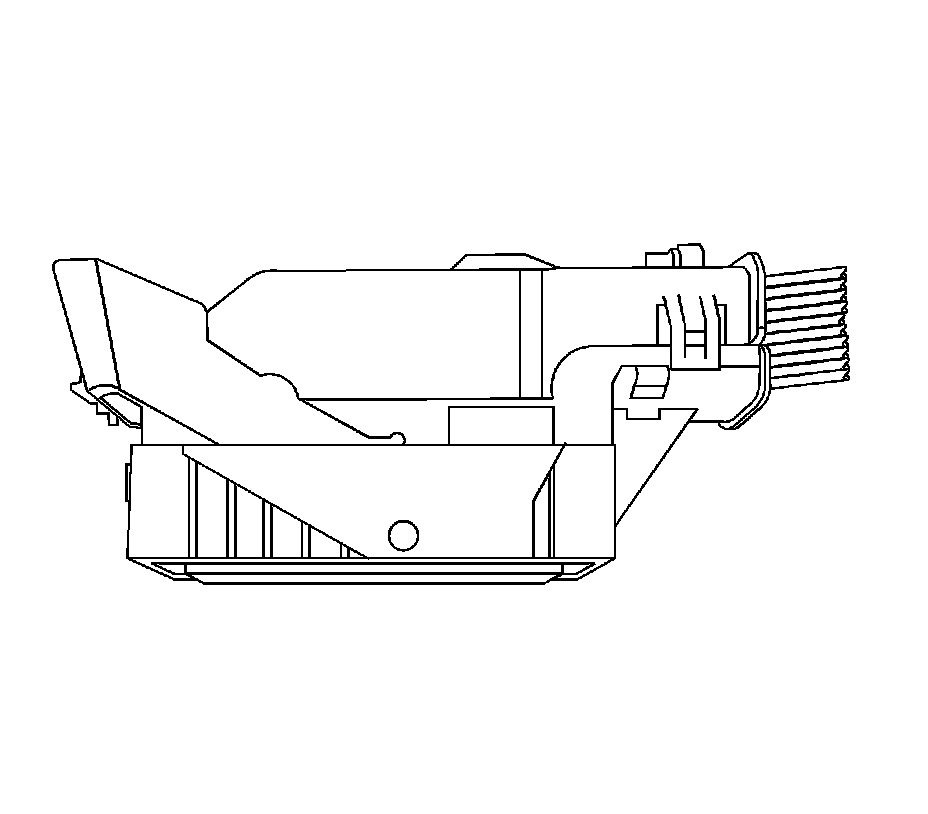
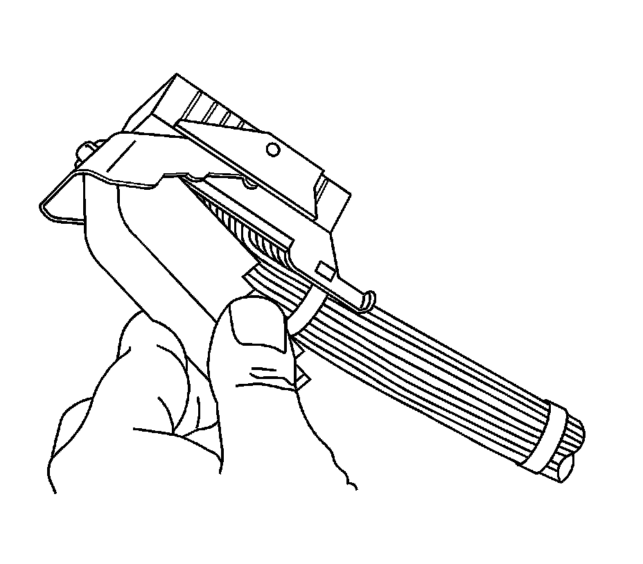
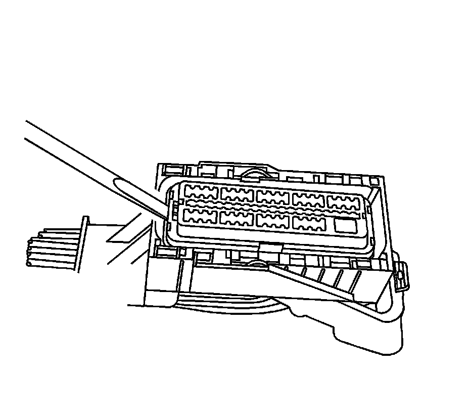
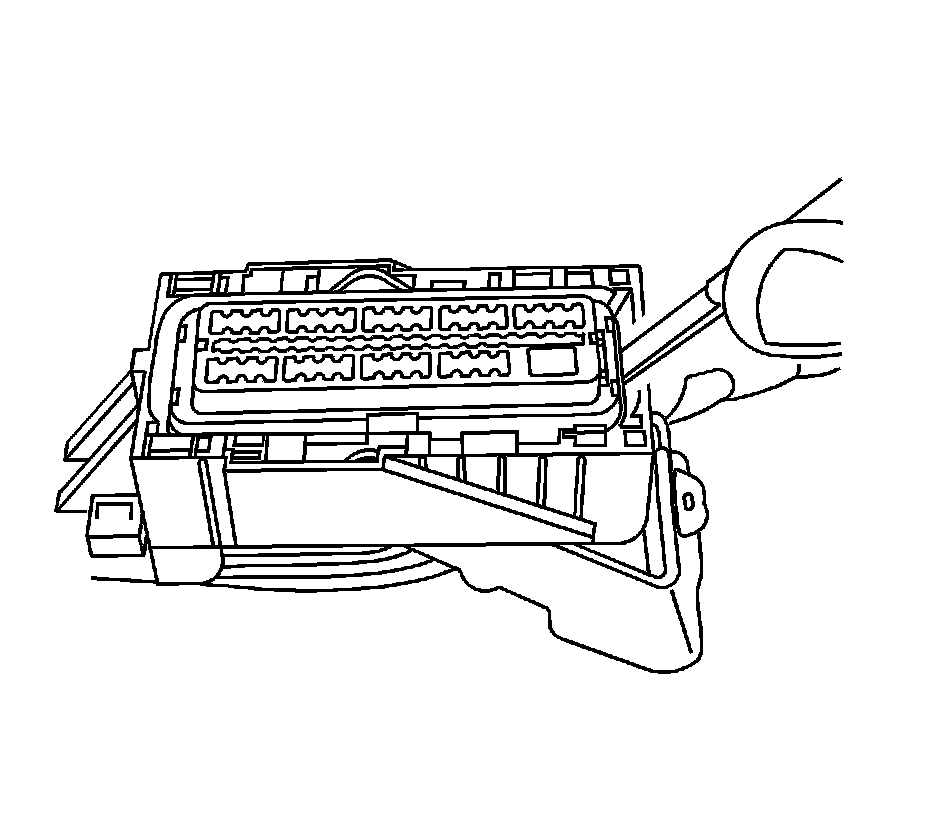
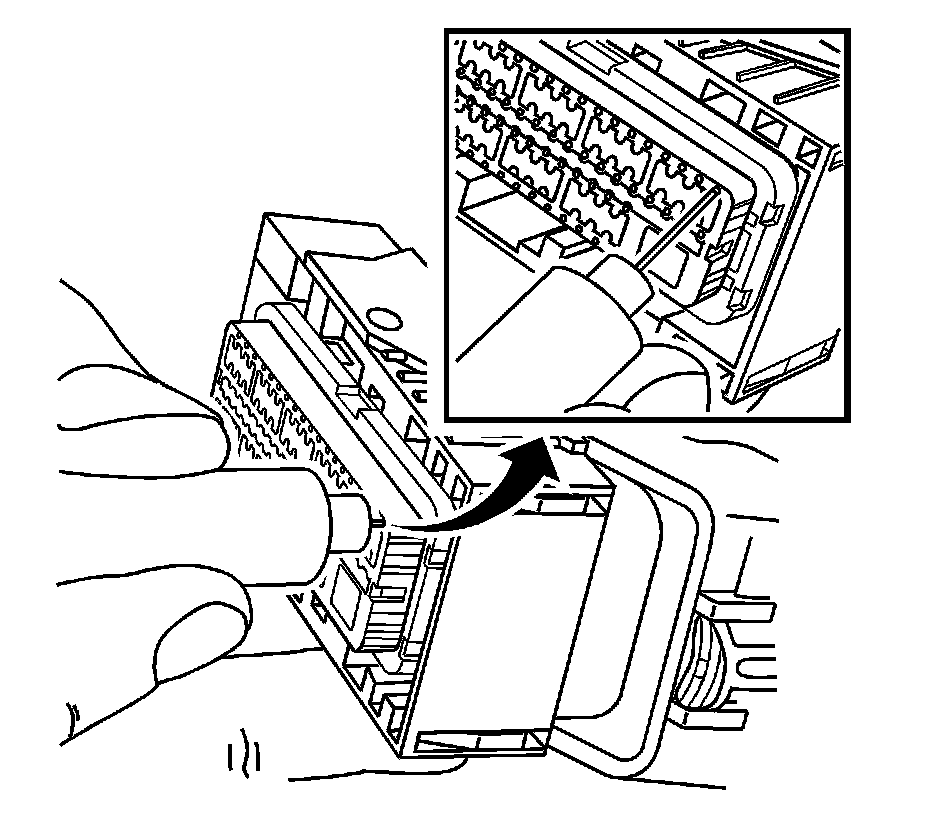

Molex Connectors
Molex Connectors
Tools Required
J-38125 Terminal Repair Kit
Terminal Removal Procedure
1. Locate the connector position assurance (CPA) on the top of the wire dress cover. Slide the CPA forward.

2. Slide the lever lock forward while pressing down on the lever lock release tab.

3. The lever should be in the full forward position.

4. Disconnect the connector from the component.

5. Remove the dress cover by using a flat bladed tool to release the dress cover locking tabs and lift up on the dress cover.
6. Cut the tie wrap that holds the wires to the connector body.

7. Use a small flat-blade tool to pry one side of the nose piece up to the pre-stage position. When the nose piece is in the pre-staged position, the nose piece will be raised above the connector body the length of the step in the nose piece.

8. Use a small flat-blade tool to pry the other side of the piece to the pre-stage position. If the nose piece is higher than the first step in the nose piece, gently push down on the nose piece until it meets with resistance from the connector body, you should feel the nose piece click into position.

9. Insert the J 38125-213 into the small terminal release hole on the nose piece and gently pull on the back of the wire.
10. See the release tool cross reference in the Reference Guide of the J-38125 Terminal Repair Kit to ensure that the correct release tool is used.
Terminal Repair Procedure
Refer to the terminal crimping procedure in the Reference Guide of the J-38125 Terminal Repair Kit.
Terminal Replacement Procedure
After the terminal is crimped to the wire, perform the following procedure in order to replace the terminal.
1. Slide the new terminal into the correct cavity at the back of the connector.
2. Push the terminal into the connector until it locks into place. The new terminal should be even with the other terminals. Insure that the terminal is locked in place by gently pulling on the wire.
3. To assemble the connector, reverse the connector disassembly procedure.